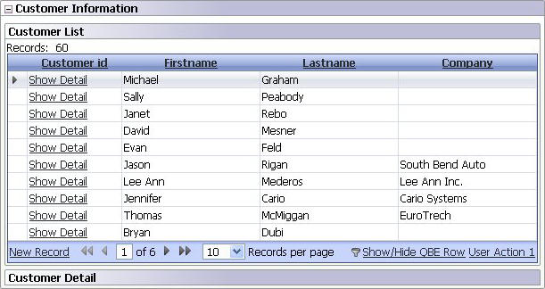

Collapsible Grid
Property name: 'Can collapse grid?' ('Grid Properties' pane)
A feature has been added allow a user to click a minus icon to 'collapse' a grid to hide it and just show a simple title bar. The title bar has a plus icon to reopen the grid. This is similar to an accordion control and requires the grid to be placed in a master template.
|  |
|
Collapsible grid expanded with a grid in an accordion master template |
|
Title bar with grid collapsed |